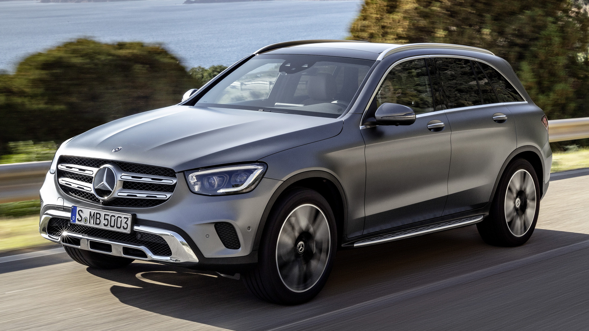
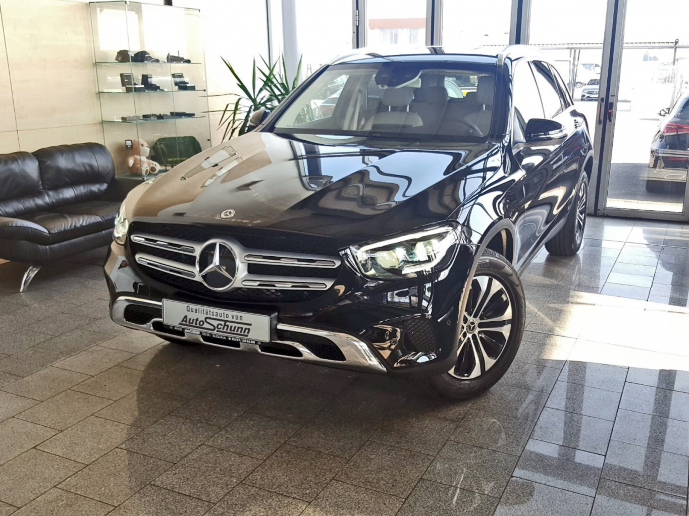
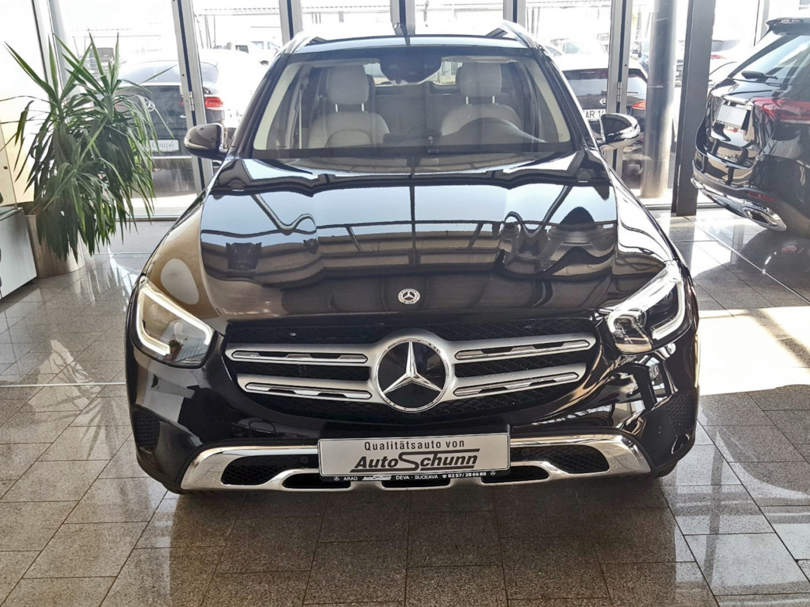
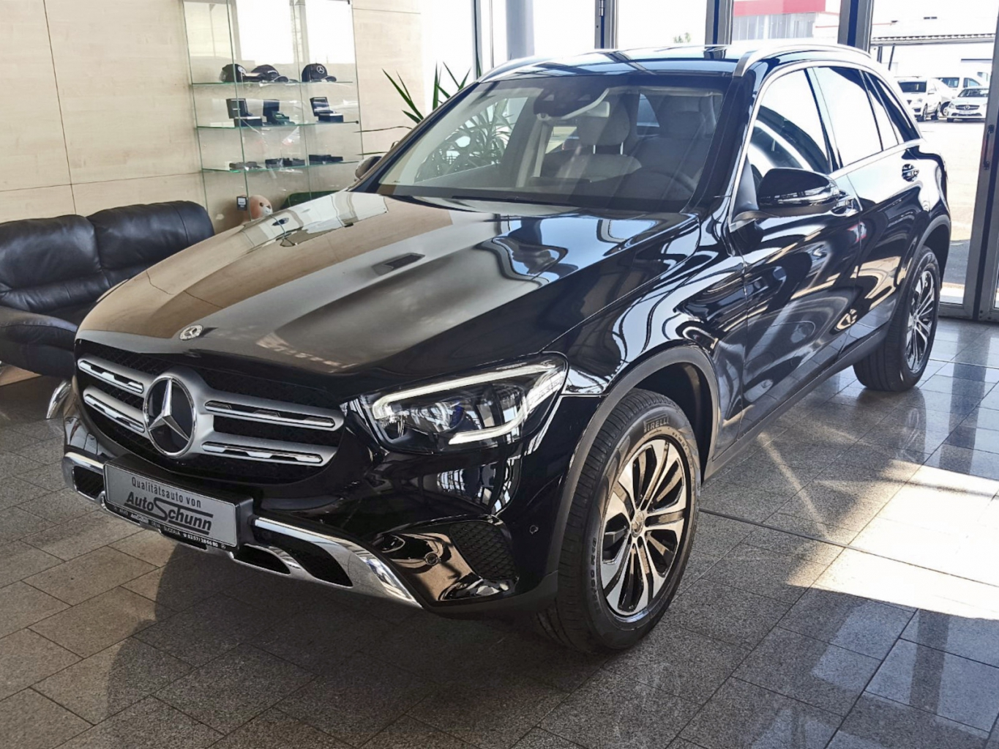
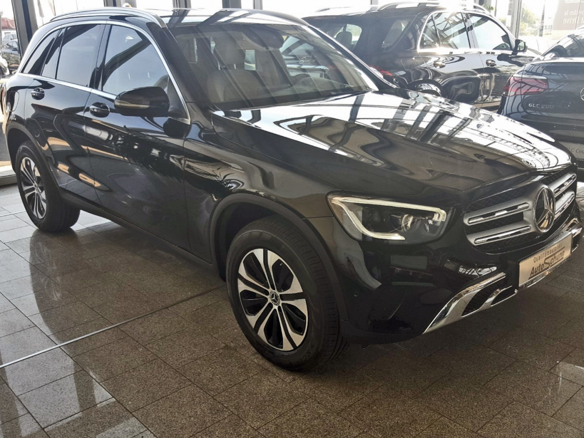
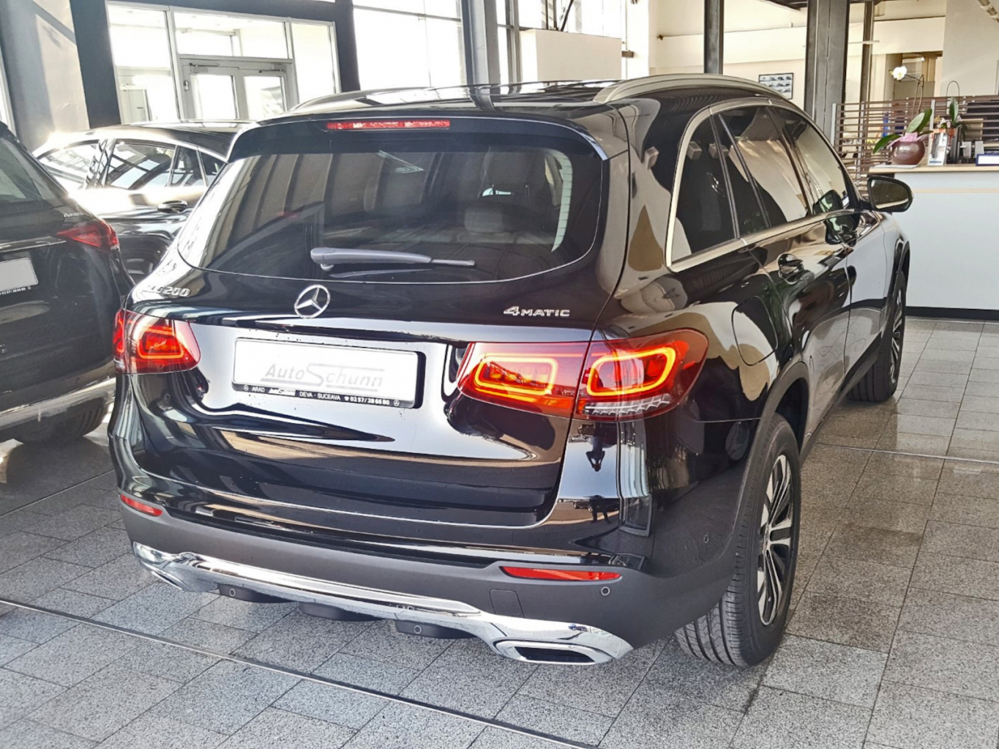
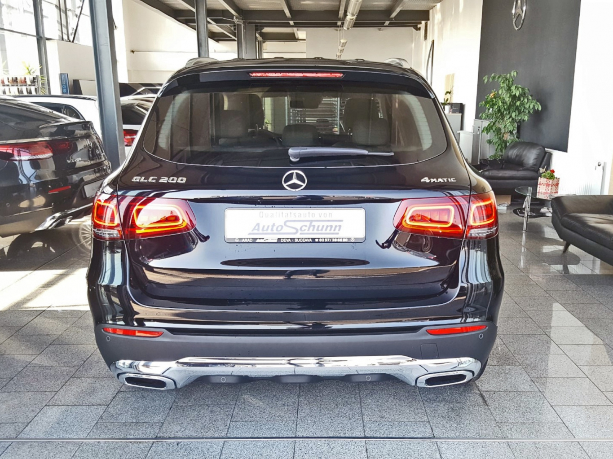
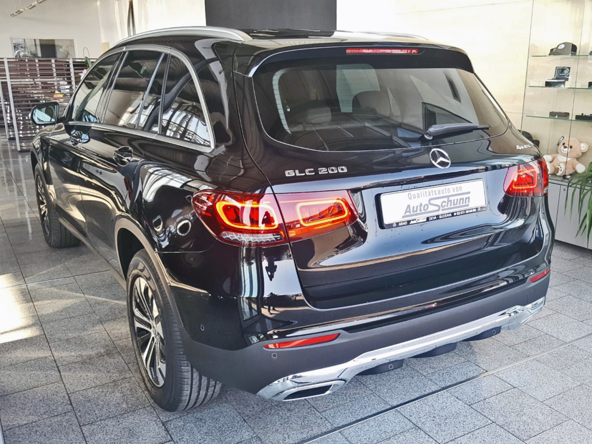
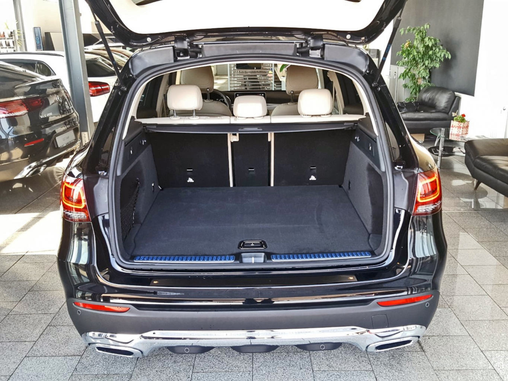
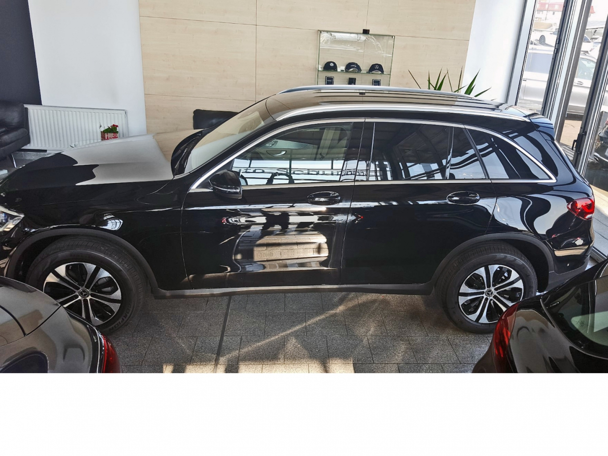

Mercedes Clasa GLC-Oltean Inter Auto
Mercedes Clasa GLC
Introdus in 2015 si este inlocuitorul clasei GLK si echivalentul SUV a clasei C

Din oferta noastra face parte: Mercedes-Benz GLC 200 4Matic PREMIUM LINIE OFF-ROAD MEMORY
  
  
  
Pretul de lista este de 45 840€+TVA si are urmatoarele dotari:
CAPACITATE CILINDRICA:1991CMC
DATA FABRICATIEI:2019
PUTERE 197cp
KEYLESS-GO
Pachet Exclusive
COMBUSTIBIL:Benzina
Camera 360 °
DYNAMIC SELECT
Asistent activ parcare cu PARKTRONIC
Apple Carplay
Sistem PRE-SAFE®
Preinstalare pentru Mercedes-Benz Link
Pachet Premium
Functie pornire cu buton a motorului (Keyless Start)
Linie Off-Road
Masina Perfecta Familiei
- Spatiu interior
- 5 locuri mari
- Portbagaj 680l
- Performante
- 580 cai putere
- 990 nm cuplu motor